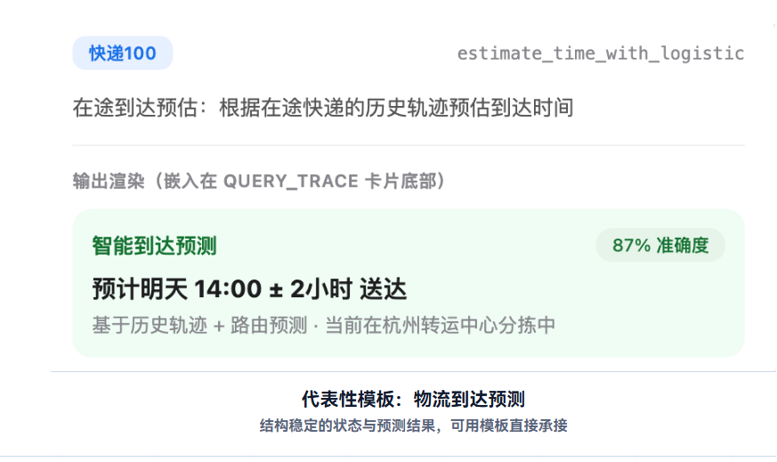

QWEN OPEN PLATFORM · PRODUCT PRACTICE
实习转正答辩
千问开放平台｜品牌分身 C 端产品实践
围绕品牌服务的结果承接、规模交付与任务启动，完成两项重点专项与多项容器能力建设。


01 / 个人背景
交互设计 × 软件工程 × AI 产品
张杰斯AI 产品经理
以交互设计理解用户，以软件工程理解系统，在真实产品与独立项目中持续验证 AI 的应用边界。
2024.09—2027.07 985浙江大学｜软件工程硕士
- 研究 AIGC 与人机交互，关注 AI 产品体验与协作
- 参与 IDEA LAB 研究与移动应用创新实践
2020.09—2024.07 985华南理工大学｜信息与交互设计本科
- 专业排名第 1，获得国家奖学金与设计创新奖项
- 建立用户研究、信息架构与交互原型能力基础

2026.06—至今
阿里千问｜AI 产品经理
- 品牌分身 C 端容器建设
- 卡片标准化、AI Coding 与分身广场迭代

2025.12—2026.06
腾讯微信｜AI 产品经理
- 公众号 AI 分身与小微助手闲聊效果优化
- 微信小店电商 Skill 接入、评测与数据回流

2025.09—2025.12
网易云音乐｜AI 产品经理
- AI 情感陪伴产品 0→1 孵化
- AIGC 旅行体验与多模态内容生产流程
2025.08—至今
萌宠来信｜创始人 & AI 产品经理
- AI 宠物旅行产品，已上架 iOS
- 约 600 名种子用户，获得 6 项黑客松奖项
03 / 标准化连接
先确定不同服务如何承接
商品推荐、物流查询、订单确认等服务很难只靠文本表达；平台需要一套成熟、可复用的结果承接方式。业务难点
核心问题不同复杂度的服务，应通过什么形式、如何承接？
先划清卡片、模板与 H5 的边界，再建设规模化交付方案。


调研验证对比微信开发者平台、开放平台 Skill / MCP、开源协议与小微助手方案，重点判断输出稳定性、交互复杂度与接入成本。
03.1 / 行业模板
从真实品牌样本中抽象卡片结构
覆盖餐饮、物流、电商、航空等高频行业，用真实 App 与 Agent 输出验证字段、业务区块和交互路径。收集真实业务
调研多个品牌 App、三方卡片需求与小微助手方案。
抽象字段与区块
拆分主体、状态、属性、操作和异常信息。
AI 辅助多版探索
快速生成结构草案，与设计共同判断层级。
沉淀行业规范
输出方案、字段定义、适用边界和交互说明。


关键发现继续按行业扩展仍会重复建设；真正稳定的复用维度不是行业名称，而是用户任务与信息结构。
03.2 / 通用模板与设计站
第二次抽象：从行业卡片到通用资产
围绕用户任务重组 Token、组件、业务区块与模板，推动千问卡片和 H5 的对外规范落地。30+通用卡片资产
3类任务承接层级
1套设计站与对外规范
价值：把逐行业、逐企业交付转成设计、研发和第三方共同使用的资产体系。


03.3 / 标准化连接 · AI Coding
模板解决复用，AI Coding 解决定制与迁移
让第三方通过自然语言调用正式组件、模板和 Token，交付符合千问规范的可运行代码。任务完成度需求是否完整实现规范符合度是否正确调用正式资产代码可用性能否编译运行并继续维护

04.3 / 实验验证
用两个实验共同验证广场价值
一个验证入口层对留存的价值，另一个验证快捷 Query 与广场改版能否提升任务启动。广场入口是否带来持续使用价值？
关注入口曝光、进入与后续留存，判断广场作为服务发现入口是否成立。
核心指标入口点击 · 回访 / 留存
能力表达是否缩短任务启动路径？
比较品牌条目、能力标签和快捷 Query，验证访问至首次 Query 的转化。
核心指标条目点击 · Query 点击与发送
我推进的实验闭环
假设与变量→指标与埋点→后台配置→资源协调→验收与放量
同步推动实验后台能力迭代，完成方案录入、资源配置与灰度节奏控制，让方案真正具备可验证条件。


05 / 真实运行与治理
补齐服务调用、治理与规模放量条件
围绕上下文、会话延续、合规展示、实验放量与三方接入，把规则和技术约束收敛为可执行方案。调用与任务延续


治理与规模放量


01快速定位链路缺口02协调资源与约束03形成可执行方案04验收、放量与复盘
05.1 / 价值反馈与持续经营
让品牌从完成上线，走向持续经营
接入不是终点；品牌需要知道服务被谁看见、谁进入、用户在问什么，才能继续优化供给与运营。从平台视角，我补齐了三层判断
指标口径：先回答最基础的曝光、访问与需求问题。
权限边界：保证数据可解释、可授权且不泄露用户隐私。
经营闭环：把用户需求反馈给品牌，推动内容、能力与运营位持续迭代。
需求洞察→能力优化→服务分发→数据反馈